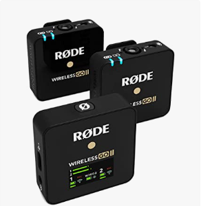

Microfono USB a Condensatore Versatile di Qualità da Studio con
Filtro Anti-Pop e Treppiede per Streaming, Gioco, Podcasting,
Produzione Musicale, Registrazione Vocale e Strumentale.
€149.00
RØDE Microphones VMGO VideoMic Go
Microfono Direzionale per Fotocamere DSLR e Videocamere, 100Hz -
16kHz, Jack 3,5 mm, Nero/Antracite USB
€69.00
RØDE NT1A
Microfono a Condensatore Cardioide a Diaframma Largo con
Supporto Antiurto, Filtro Antipop e Cavo XLR per Produzione
Musicale, Registrazione Vocale, Streaming e Podcasting
€169.00
RØDE Videomicro
Microfono Direzionale Compatto Sulla Fotocamera Per Riprese
Cinematografiche, Nero Rosso, 8 x 2.1 x 2.1 cm, 42 grammi
€53.20

RØDE Microphones
Sistema wireless a doppio canale Wireless Go II con microfoni
incorporati, nero, Doppio trasmettitore